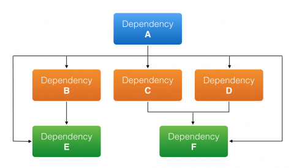
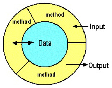

# JavaScript Modules Learn about JavaScript module systems and ECMAScript modules. **You will need** * [Google Chrome][chrome] (recommended, any browser with developer tools will do) **Recommended reading** * [JavaScript][subject-js] --- ## Why are modules needed? .breadcrumbs[<a href="#1">JavaScript Modules</a>] The purpose of module systems is to solve these 2 concerns: .grid-50[ **Dependency** Pieces of software need to be able to depend upon other pieces of software written by other developers.  ] .grid-50[ **Encapsulation** Conflicts between different pieces of software must be avoided (e.g. prevent variable/function name collision, prevent access to private members).  ] --- ### Traditional client-side JavaScript dependencies .breadcrumbs[<a href="#1">JavaScript Modules</a> > <a href="#2">Why are modules needed?</a>] Dependencies are **implicit** in a traditional client-side JavaScript browser page. It's the **developer's job** to **manually** ensure all dependencies are satisfied **in the correct order**: ```html <!DOCTYPE html> <html lang="en"> <head> <meta charset="utf-8"> <title>Backbone.js Todos</title> <link rel="stylesheet" href="/src/todos.css"/> </head> <body> * <script src="/vendor/json2.js"></script> * <script src="/vendor/jquery.js"></script> * <script src="/vendor/underscore.js"></script> * <script src="/vendor/backbone.js"></script> * <script src="/vendor/backbone.localStorage.js"></script> * <script src="/src/todos.js"></script> </body> </html> ``` --- ### Traditional client-side JavaScript encapsulation .breadcrumbs[<a href="#1">JavaScript Modules</a> > <a href="#2">Why are modules needed?</a>] <codepen></codepen> In a web page, encapsulation has been traditionally achieved by taking advantage of the JavaScript function scope. Patterns like the [revealing module pattern][revealing-module-pattern] can be used to isolate private members within an [Immediately-Invoked Function Expression (IIFE)][iife]: ```js var myRevealingModule = (function () { // IIFE var privateName = 'John Doe'; // Declare private members inside the IIFE. function publicSetName(name) { privateName = name; } function publicGetName() { return privateName; } return { // Reveal a public interface. setName: publicSetName, getName: publicGetName }; })(); myRevealingModule.setName('John Smith'); console.log(myRevealingModule.getName()); // "John Smith" console.log(privateName); // ReferenceError: privateName is not defined ``` --- ### Problems of traditional dependency & encapsulation .breadcrumbs[<a href="#1">JavaScript Modules</a> > <a href="#2">Why are modules needed?</a>] * **Dependency management** gets cumbersome as JavaScript development complexifies: where should newer dependencies be put to maintain proper order of the load chain? * The risk of **naming collisions** increases with the number of dependencies, since all public functions and variables are in the **global scope**. * There is no way to programmatically **import modules** (e.g. revealing modules): dependencies must be handled **manually**. * **Asynchronous loading** of modules is not possible. * Revealing modules are **hard to analyze** for static code analyzers. --- ## Modern JavaScript module systems .breadcrumbs[<a href="#1">JavaScript Modules</a>] Various module systems were created over the years to solve these issues: * [AMD][amd] - Asynchronous Module Definition with `define()`: ```js define([ 'jquery' ] , function ($) { return function myExample() {}; }); ``` * [CommonJS][commonjs] - Synchronous imports with `require()` (used in Node.js): ```js const jquery = require('jquery'); exports.myExample = function() {}; ``` With ECMAScript 2015 (ES6), a new standard has emerged—[ECMAScript Modules][esm] ([import][esm-import]/[export][esm-export]): ```js import jquery from 'jquery'; import { Component } from 'react'; export function myExample() {} ``` --- ### JavaScript module systems compabitility .breadcrumbs[<a href="#1">JavaScript Modules</a> > <a href="#6">Modern JavaScript module systems</a>] Those systems are **not natively supported by browsers** (although ECMAScript modules are almost there), meaning that you cannot use AMD's `define()` or CommonJS's `require()` in the browser without including a module loader like RequireJS or System.js; and support for ECMAScript's `import/export` is not yet complete (and might never be on old browsers like Internet Explorer). Various tools can be used to work with JavaScript modules today: * [Babel][babel] - Transform "new" JavaScript (ES6+, AMD, CommonJS) into "old" JavaScript (ES5). * [System.js][systemjs] - Load any kind of JavaScript module (AMD, CommonJS, ECMAScript). * [TypeScript][ts] - A typed superset of JavaScript that compiles to plain JavaScript. * [Webpack][webpack] - Bundle all your assets (including modern JavaScript) into a minified production bundle. --- ## ECMAScript modules .breadcrumbs[<a href="#1">JavaScript Modules</a>] ECMAScript modules have been defined by [ECMA TC39, the ECMAScript International, Technical Committee 39][tc39]. Full support has not yet been achieved but it will eventually become compatible with all modern browsers [and with Node.js][node-esm]. It's *the way of the future*: ```js import jquery from 'jquery'; import * as React from 'react'; import { map, reduce } from 'lodash'; const privateFactor = 3; export const foo = [ 1, 2, 3 ]; export function hello(name) { console.log(\`Hello ${name}!`); } export default function doAllTheThings() { hello('World'); return reduce(map(foo, n => n * privateFactor), (memo, n) => memo + n); } ``` --- ### What's in a module? .breadcrumbs[<a href="#1">JavaScript Modules</a> > <a href="#8">ECMAScript modules</a>] A module is simply a JavaScript file. It has its own **isolated scope**, meaning that any variables declared within it are **scoped to that module**, i.e. they are not visible to other modules. This is unlike traditional JavaScript environments with `<script>` tags in a web page, where all public variables are in the global scope. <p class='center'></p> --- ### The `export` statement .breadcrumbs[<a href="#1">JavaScript Modules</a> > <a href="#8">ECMAScript modules</a>] The **`export`** statement is used to export functions, objects or primitive values from a module so they can be used by other programs with the `import` statement. ```js export { name1, name2, …, nameN }; export { variable1 as name1, variable2 as name2, …, nameN }; export let name1, name2, …, nameN; // also var export let name1 = …, name2 = …, …, nameN; // also var, const export function FunctionName(){...} export class ClassName {...} export default expression; export default function (…) { … } // also class, function export default function name1(…) { … } // also class, function export { name1 as default, … }; export * from …; export { name1, name2, …, nameN } from …; export { import1 as name1, import2 as name2, …, nameN } from …; export { default } from …; ``` --- ### The `import` statement .breadcrumbs[<a href="#1">JavaScript Modules</a> > <a href="#8">ECMAScript modules</a>] The **`import`** statement is used to import functions, objects or primitive values exported by another module. ```js import defaultExport from 'module-name'; import * as name from 'module-name'; import { export } from 'module-name'; import { export as alias } from 'module-name'; import { export1, export2 } from 'module-name'; import { export1, export2 as alias2, … } from 'module-name'; import defaultExport, { export, … } from 'module-name'; import defaultExport, * as name from 'module-name'; import 'module-name'; ``` --- ### Exporting and importing values .breadcrumbs[<a href="#1">JavaScript Modules</a> > <a href="#8">ECMAScript modules</a>] .grid-45[ Use `export` to export anything: ```js // FILE: module-a.js `export let foo` = 'bar'; `export const truth` = true; `export function hello`(name) { console.log(\`Hello ${name}!`); } `export const plane` = { id: 'SR-71', speed: 3540 }; `export default class Person` { constructor(first, last) { this.first = first; this.last = last; } get full() { return this.first + ' ' + this.last; } } ``` ] .grid-55[ Import everything with `import *`: ```js // FILE: module-b.js `import * as a` from './module-a'; console.log(`a.foo`); // "bar" console.log(`a.truth`): // true `a.hello`('World'); // "Hello World!" const p = new `a.Person`('John', 'Doe'); console.log(p.full); // "John Doe" ``` Import only what you need with `{ }`: ```js // FILE: module-c.js `import { foo, plane }` from './module-a'; console.log(`foo`); // "bar" console.log(`plane`.speed): // 3540 ``` ] --- ### Default exports .breadcrumbs[<a href="#1">JavaScript Modules</a> > <a href="#8">ECMAScript modules</a>] .grid-40[ The **default export** is the value exported with an `export default` statement. **There can only be one** in each module: ```js // FILE: module-a.js export let foo = 'bar'; export const truth = true; `export default class Person` { constructor(first, last) { this.first = first; this.last = last; } get full() { return this.first + ' ' + this.last; } } ``` ] .grid-60[ Use `import name from 'module'` to retrieve another module's default export: ```js // FILE: module-b.js `import Person` from './module-a'; const p = new `Person`('John', 'Doe'); console.log(p.full); // "John Doe" ``` It's also possible to retrieve **both** the default export and other specific values: ```js // FILE: module-b.js `import Person, { truth }` from './module-a'; const p = new `Person`('John', 'Doe'); console.log(p.full); // "John Doe" console.log(`truth`); // true ``` ] --- ### Renaming exports and imports .breadcrumbs[<a href="#1">JavaScript Modules</a> > <a href="#8">ECMAScript modules</a>] The `as` keyword can be used to rename an exported variable: ```js // FILE: module-a.js const `foo` = 'bar'; const `truth` = true; export { `foo as oof`, `truth as lies` }; ``` It can also be used to rename an imported variable: ```js // FILE: module-b.js import { `oof as f, lies as l` } from './module-a'; console.log(`f`); // "bar" console.log(`l`); // true ``` This is handy to **avoid naming collisions** in a module: ```js import { `Component as ReactComponent` } from 'react'; export default class Component extends `ReactComponent` { // ... } ``` --- ### Transitive exports .breadcrumbs[<a href="#1">JavaScript Modules</a> > <a href="#8">ECMAScript modules</a>] Let's assume `module-a.js` exports these values: ```js // FILE: module-a.js export let foo = 'bar'; export const truth = true; ``` `module-b.js` imports them. Then, in addition to exporting its own new `lies` variable, it also **re-exports** `module-a.js`'s `foo` variable: ```js // FILE: module-b.js import { `foo`, truth } from './module-a' const lies = !truth; export { `foo`, lies }; ``` `module-c.js` has access to both `lies` coming directly from `module-b.js`, and to `foo` coming from `module-a.js` and re-exported through `module-b.js`: ```js // FILE: module-c.js import { foo, lies } from './module-b'; console.log(foo); // "bar" console.log(lies); // false ``` --- ## Why should I use ECMAScript modules? .breadcrumbs[<a href="#1">JavaScript Modules</a>] Because: * They are integrated in the language (eventually they will supported everywhere, with no need for libraries). * They support **synchronous** (CommonJS, server-side) and **asynchronous** (AMD, client-side) **loading**. * `import` and `export` are defined so as to support **static analysis** by tools. * Circular dependencies are supported. However: * They are **not yet supported** now, meaning that it forces you to use a transpiler like [Babel][babel], a module loader like [System.js][systemjs], or a bundler like [Webpack][webpack]. --- ## Resources .breadcrumbs[<a href="#1">JavaScript Modules</a>] **Documentation** * [`export`][esm-export] * [`import`][esm-import] **Further reading** * [Brief History of JavaScript Modules][js-modules-history] * [JavaScript Module Systems Showdown: CommonJS vs AMD vs ES2015][js-module-systems-showdown] [amd]: https://github.com/amdjs/amdjs-api/blob/master/AMD.md [babel]: https://babeljs.io [chrome]: https://www.google.com/chrome/ [commonjs]: http://www.commonjs.org [esm]: http://2ality.com/2014/09/es6-modules-final.html [esm-export]: https://developer.mozilla.org/en-US/docs/web/javascript/reference/statements/export [esm-import]: https://developer.mozilla.org/en-US/docs/Web/JavaScript/Reference/Statements/import [iife]: https://developer.mozilla.org/en-US/docs/Glossary/IIFE [js-module-systems-showdown]: https://auth0.com/blog/javascript-module-systems-showdown/ [js-modules-history]: https://medium.com/sungthecoder/javascript-module-module-loader-module-bundler-es6-module-confused-yet-6343510e7bde [node-esm]: https://nodejs.org/api/esm.html#esm_ecmascript_modules [revealing-module-pattern]: https://addyosmani.com/resources/essentialjsdesignpatterns/book/#revealingmodulepatternjavascript [subject-js]: ../js/ [systemjs]: https://github.com/systemjs/systemjs [tc39]: https://github.com/tc39 [ts]: https://www.typescriptlang.org [webpack]: https://webpack.js.org